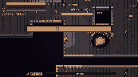
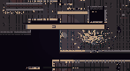
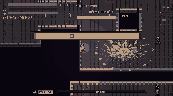
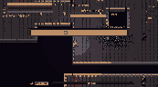
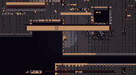
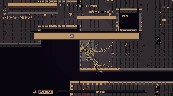
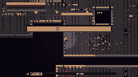
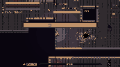

C separate-pass diagnostic
Experimental, not visual acceptance. These are low-resolution, 16-color thumbnails. One still per effect, not a motion or source-parity test. The experimental pass omits real screen post, terrain, displacement and bloom. #01 also retains legacy A; actors and camera are not PR #30 combat binding. Do not use the legacy sprite as an approved composite.
Same real SOH crypt scene and 55%-duration sample per pair. The comparison is from commit 05050c1e2, real-scene run 41203931063; download the arcana20-real-scene-diagnostics artifact for full-resolution PNGs and the manifest. Experiment and limitations.
01 · Cinder Crown



07 · Mirrorfrost Basilica




10 · Thunderloom




15 · Thorn Opera



17 · Event Horizon




At this scale the HUD obscures part of the play area; real actor occlusion, contact, motion, bright scenes and post effects remain unverified. All skills remain VISUAL_NOT_VERIFIED.